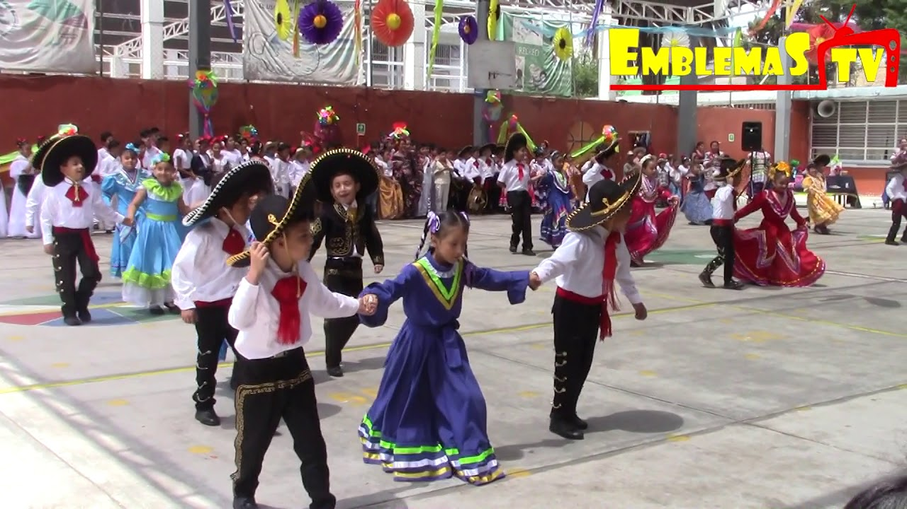
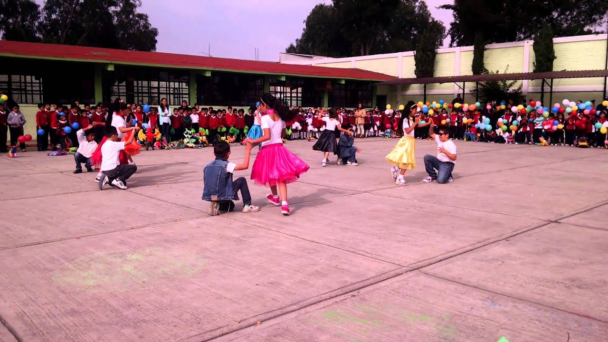
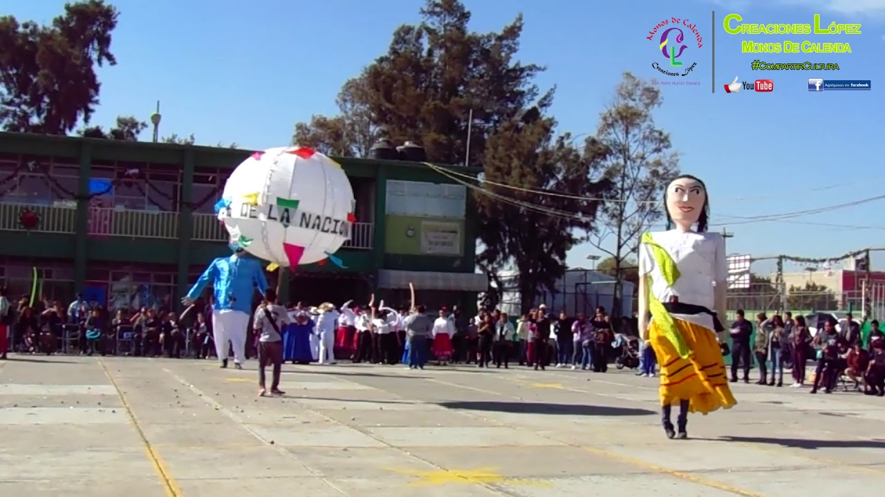
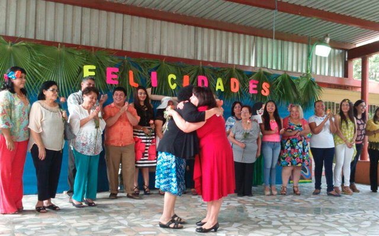

- 
- 
- 
- 
Festejando a Mamá en su día
El Día de las madres es una celebración especial, cuando eramos pequeños bastaba con salir a bailar en el festival escolar para decirle a mamá cuanto la queremos.
"Una buena vida es aquella inspirada por el amor y guiada por la inteligencia"
La unidad educativa dispone de una infraestructura amplia y moderna, capaz de garantizar una formación de excelente nivel.
Los estudiantes cuentan con todo lo necesario para su formacion integral, posee laboratoios, canchas deportivas, piscina, gimnasio, auditorio, etc.
Promover hábitos de estudio, trabajo, colaboración y responsabilidad con base en la autodisciplina. Fomentar el desarrollo pleno de las habilidades y cualidades individuales de cada estudiante en lo emocional, social, psíquico, científico, deportivo y artístico.
El Día de las madres es una celebración especial, cuando eramos pequeños bastaba con salir a bailar en el festival escolar para decirle a mamá cuanto la queremos.
La alegría que produce a los estudiantes es inigualable, especialmente para los abanderados, portaestandartes y escoltas del acto, que son los encargados de hacer jurar la bandera a sus demás compañeros, y que además son los más destacados en notas en todos sus años de estudio.
Tercer año de bachillerato conjuntamente con el gobierno estudiantil organizo una gran bienvenida y recibimiento a los nuevos hijos del Colegio Fiscal San José de Olmedo.